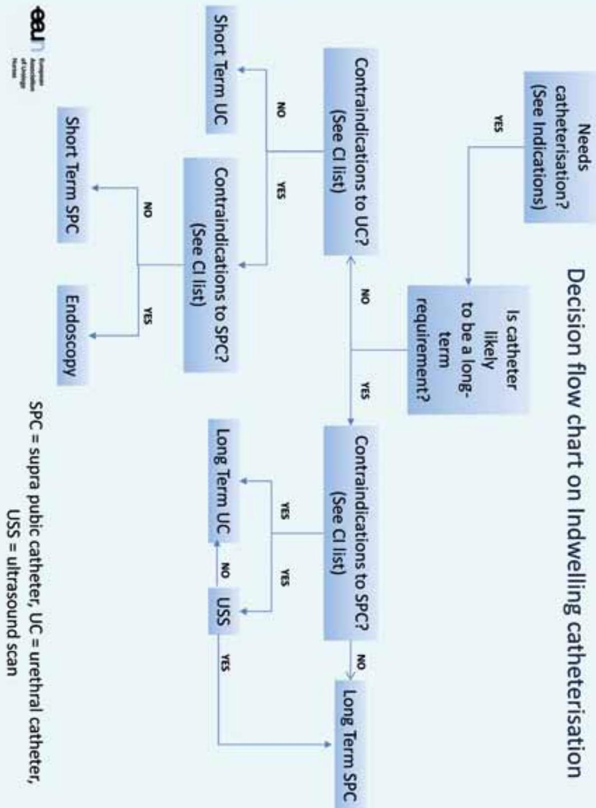

Appendices and References
13. Abbreviations
- B00 Bladder outlet obstruction
- BWO Bladder washout
- CABF Catheter-associated bacteriuria
- CAI Community acquired infection
- CAUTI Catheter associated urinary tract infection
- CBI Continuous Bladder Irrigation
- CSU Catheter specimen of urine
- EDTA Ethylenediaminetetraacetic acid
- GA General anaesthetic
- HAI Hospital acquired infection
- IUC Indwelling urethral catheter
- NS Nurse specialist
- NUTI Nosocomial urinary tract infections
- PUBS Purple urine bag syndrome
- PVC Polyvinylchloride
- SCC Squamous cell carcinoma
- SPC Suprapubic catheterisation
- TCC Transitional cell carcinoma
- TURP Transurethral resection of the prostate
- UTI Urinary tract infection
14. Figure reference list
Cover pictures: Left and right picture: Source unknown
Fig. 1 Female: See cover picture
Fig. 2 Male: Provided by the American Urological Association Foundation, http://www.urologyhealth.org/
Fig. 3 Without balloon: Reproduced with kind permission of Hospital Santa Maria Lleida, Spain
Fig. 4 With balloon: See cover picture
Fig. 5 Female urethral catheter: See cover picture
Fig. 6 Male suprapubic catheter: See cover picture
Fig. 7 One-way catheters for various uses as mentioned in the listing above this figure. Courtesy T. Schwennesen, Denmark
Fig. 8 2-way catheter and Fig. 9 3-way catheter: These illustrations were published in Essential Clinical Procedures, Richard W. Dehn, David P. Asprey, Vol. 1, 2nd ed., 2007: 205, Chapter 16, Urinary Bladder Catheterization by Dan Vetrosky. Copyright Saunders Elsevier (2011).
Fig. 10 Catheter with a temperature sensor: Courtesy C. Vandewinkel, Belgium
Fig. 11 Suprapubic catheter with a balloon: See cover picture
Fig. 12 Suprapubic catheter without a balloon: See Fig. 3
Fig: 13a Open end catheter with a guide wire and Fig. 13b a close-up picture where the guide wire enters the catheter: Courtesy T. Schwennesen, Denmark
Fig. 14 Catheter set: Courtesy T. Schwennesen, Denmark
Fig. 15 International colours of catheter size and 16. Examples of silicon and latex catheter lumen: Reproduced with kind permission of Coloplast Denmark A/S
Fig. 17 From top to bottom: Nelaton (latex), Nelaton (silicone) and Tiemann (silicone): Courtesy T. Schwennesen, Denmark
Fig. 18 Tiemann indwelling catheter (hard latex): Courtesy C. Vandewinkel, Belgium
Fig. 19 Inflated balloon in the bladder: Reproduced with kind permission of the Rotherham District General Hospital, Rotherham, United Kingdom
Fig. 20 Silicone Tiemann catheter with deflated and inflated balloon: Courtesy T. Schwennesen, Denmark
Fig. 21 Pre-connected drainage system: Courtesy C. Vandewinkel, Belgium
Fig. 22 Different types of leg bags: Courtesy T. Schwennesen, Denmark
Fig. 23 Collection of a catheter specimen of urine - needle free: Courtesy T. Schwennesen, Denmark
Fig. 24 The bag fixed at the leg: Reproduced with kind permission of the Rotherham District General Hospital, Rotherham, United Kingdom
Fig. 25 Special net for leg bag: Courtesy C. Vandewinkel, Belgium
Fig. 26 Leg bag of cotton and extra fixation on the abdomen: Reproduced with kind permission of Netti A/S, Denmark
Fig. 27 Examples of bag taps: Reproduced with kind permission of the International Consultation on Urological Diseases (ICUD), Bristol, United Kingdom
Fig. 28 A quadriplegic patient with a poor manual dexterity: Courtesy T. Schwennesen, Denmark
Fig. 29 Body worn bag: Reproduced with kind permission of Teleflex Headquarters EMEA, Ireland, Teleflex Medical Europe Ltd., IDA Business Park, Athlone, Co. Westmeath, www.teleflex.com.
Fig. 30 Different types of night bags: Courtesy T. Schwennesen, Denmark
Fig. 31 Overnight drainage system: Reproduced with kind permission of the Rotherham District General Hospital, Rotherham, United Kingdom
Fig. 32 Different catheter valves: Courtesy T. Schwennesen, Denmark
Fig. 33 and Fig. 34 Different types of catheter securement devices: Courtesy T. Schwennesen, Denmark
Fig. 35 Fixation of the catheter: Source: unknown
Fig. 36 Fixation of a urethral catheter
Fig. 37 Fixation of the urethral catheter/leg bag: Courtesy C. Vandewinkel, Belgium
Fig. 38 Fixation of the catheter with a securement device: Courtesy D.K. Newman, United States of America
Fig. 39 No touch technique: Courtesy C. Vandewinkel, Belgium
Fig. 40 Three lumen catheter for Continuous Bladder Irrigation: Courtesy M. Gea-Sánchez, Spain
Fig. 41 Syringe ( 60 ml ) and sterile saline to remove clots: Courtesy M. Gea-Sánchez, Spain
15. Appendices
Below a number of procedures are described. These procedures do not have a high level of evidence, but they are based on the experience of the working group as well from protocols, care standards of various hospitals. Subsequently the evidence level for these documents is 4 C .
| Appendix A | Decision flow chart on Indwelling catheterisation |
| Appendix B | Male urethral catheterisation - insertion procedure |
| Appendix C | Female urethral catheterisation - insertion procedure |
| Appendix D | Insertion of a suprapubic balloon catheter |
| Appendix E | Patient information about common problems with indwelling catheter equipment |
| Appendix F | Observation of the urinary drainage |
| Appendix G | Possible colour and odour changes in urine due to food or medication |
| Appendix H | Preparation and procedure for changing a suprapubic catheter |
| Appendix I | Flow chart on Indwelling urethral catheter removal |
| Appendix J | Removal of the urethral catheter - procedure |
| Appendix K | Removal of the suprapubic catheter - procedure |
| Appendix L | Troubleshooting for indwelling catheters (Problem management) |
| Appendix M | Potential problems during catheter removal |
| Appendix N | Potential problems following removal of the catheter |
| Appendix 0 | Bladder washout - procedure and troubleshooting |
| Appendix P | Obtaining a urine sample from an indwelling catheter - procedure |
| Appendix Q | Example Catheter change record |
| Appendix R | Decision flow chart on Draining of the catheter |
Appendix A
Decision flow chart on Indwelling catheterisation
Appendix B
Male urethral catheterisation - insertion procedure
Checklist equipment:
- Sterile catheterisation pack containing gallipots, receiver, low-linting swabs, disposable towels
- Disposable pad for bed protection
- 2 pairs of gloves, one of which must be sterile for handling catheter
- Selection of appropriate catheters; it is advisable to take a spare catheter in addition to the one you want, and one of a different/smaller size
- Sterile anaesthetic lubricating jelly (1-2 tubes).
- Universal specimen container, if required
- Cleansing solution
- Bactericidal alcohol hand disinfection.
- 10 ml sterile water (inflation of balloon) or as recommended by manufacturer
- Syringe and needle to draw up sterile water and inflate balloon
- Disposable plastic apron/protective clothing
- A closed urinary drainage system, e.g. a night bag, leg bag or catheter valve
- A catheter drainage bag stand, if required
| Action | Rationale |
|---|---|
| 1. Check patient file for past problems, allergies etc. | To ensure the patient understands the procedure. |
| 2. During the procedure explain the process to the patient. | Consent |
| 3. a) Undertake procedure on the patient's bed or in clinical treatment area using screens/ curtains to promote and maintain dignity b) Assist the patient to get into the supine position to ensure the penis is accessible c) Do not expose the patient at this stage of the procedure. |
To maintain patient's dignity procedure and comfort. |
| 4. Wash hands using soap and water or bactericidal alcohol hand rub. | To reduce risk of infection. |
| 5. Clean and prepare the trolley, placing all equipment required on the bottom shelf. | The top shelf acts as a clean working surface. |
| 6. Take the trolley to the patient's bedside. | |
| 7. Open the outer cover of the catheterisation pack and slide the pack onto the top shelf of the trolley. | To prepare equipment. |
| 8. Using an aseptic technique, connect the bag to the catheter at this stage. | To reduce the risk of cross infection. |
| 9. Remove cover that is maintaining the patient's privacy and position a disposable pad under the patient's buttocks and thighs. | To ensure urine does not leak onto bed. |
| 10. Clean hands with a bactericidal alcohol hand rub. | Hands may have become contaminated by handling the outer packs. |
| 11. Put on gloves. | To reduce risk of cross infection. |
| 12. Place dressing / protective towel across the patient's thighs and under penis. | To create a protective field. |
| 13. Lift the penis and retract the foreskin if present using a gauze swab and clean the glans penis with the solution. Beginning with the foreskin, the glans and urethral meatus at the end. Use a new swab for each part. | Lifting the penis straightens the penile urethra and facilitates catheterisation. To reduce the risk of introducing infection. [185] |
| 14. Replace existing gloves with a sterile pair. | To prevent infection. |
| 15. Slowly instill 10-15 ml of the (anaesthetic) lubricating gel into the urethra holding the penis firmly below the glans with thumb and fingers and the tip of the syringe firmly in the meatus to prevent the gel from leaking out. | Adequate lubrication helps to prevent urethral trauma. Use of a local anaesthetic minimises the discomfort experienced by the patient and can aid success of the procedure. |
| 16. Remove the syringe tip from the urethra and keep the urethra closed. Alternatively, a penile clamp may be used. | To ensure that the gel stays in the urethra. |
| 17. Wait as recommended on the product (3 to 5 min .) | To ensure a maximised anaesthetic effect. [65, 68, 69, 71, 186] |
| 18. Advance the catheter gently to the bifurcation. Hold the penis all the time upright with traction of the other hand (if no urine drains gently apply pressure over the symphysis pubis area. | Advancing the catheter ensures that it is correctly positioned in the bladder. [75, 187, 188] |
| 19. Slowly inflate the balloon according to the manufacturer's direction, having ensured that the catheter is draining urine beforehand. | Inadvertent inflation of the balloon in the urethra causes pain and urethral trauma. [63, 187] |
| 20. Withdraw the catheter slightly. | Withdrawing the catheter ensures the balloon sits at the bladder base ensuring optimal urine drainage. |
| 21. Secure the catheter using a support strap. Ensure that the catheter does not become taut when patient is mobilising or when the penis becomes erect. (For Stabilisation of urethral catheter see 6.5.5) | To maintain patient comfort and to reduce the risk of urethral and bladder neck trauma. |
| 22. Ensure that the glans penis is cleansed after the procedure and reposition the foreskin if present. | Retraction and constriction of the foreskin behind the glans penis resulting in paraphimosis may occur if this is not done. [65] |
| 23. Help the patient into a comfortable position. Ensure that the patient's skin and the bed are both dry. | If the area is left wet or moist, secondary infection and skin irritation may occur. |
| 24. Measure the amount of urine. | To be aware of bladder capacity for patients with previous occurrences of urinary retention. To monitor renal function and fluid balance. It is not necessary to measure the amount of urine if the patient is having the urinary catheter routinely changed. |
| 25. Take a urine specimen for laboratory examination, if required. | To rule out urinary tract infection. |
| 26. Dispose of equipment in a plastic clinical waste bag and seal the bag before moving the trolley. | To prevent environmental contamination. |
| 27. Record information in relevant documents, this should include: - reasons for catheterisation - date and time of catheterisation - catheter type, length and size. - amount of water instilled into the balloon - batch number and manufacturer - drainage system used - problems negotiated during the procedure - review date to assess the need for continued catheterisation or date of change of catheter. |
To provide a point of reference or comparison in the event of later queries. |
| 28. Record patient experience and any problems. See Chapter 12 | To provide a point of reference or comparison in the event of later queries. |
Appendix C
Female urethral catheterisation - insertion procedure
The needed equipment is the same as in male catheterisation (Appendix A)
| Action | Rationale |
|---|---|
| Until point 12 the procedure is the same as for male catheterisation. | |
| 13. Place dressing / protective towel under the patient. | To create a protective field. |
| 14. Put on gloves | To reduce risk of cross infection. |
| 15. Clean the meatus: labia majora, then the labia minor and finally the urethral meatus. One swab one wipe anterior to posterior. | To avoid wiping any bacteria from the perineum and anus forwards towards the urethra. |
| 16. Put on sterile gloves. | To prevent infection. |
| 17. Separate the labia with one hand and give traction upwards. | To have a good view on the meatus and to minimise the risk of contamination of the urethra. |
| 18. Apply a little lubrication to the meatus and then insert the conus of the syringe with (anaesthetic) lubrication in the meatus and slowly instill 6 ml of the gel into the urethra. Then remove the nozzle from the urethra. | Adequate lubrication helps to prevent urethral trauma. Use of a local anaesthetic minimises the discomfort experienced by the patient and can add to the success of the procedure. |
| 19. Pick up the catheter with the hand with the sterile glove. Insert the catheter in the meatus and gently advance the catheter along the urethra until it reaches the bladder and urine flows out. Then insert the catheter 2 cm deeper. | Inadvertent inflation of the balloon in the urethra causes pain and urethral trauma [63, 187] To be sure that the balloon is in the bladder. |
| 20. Withdraw the catheter slightly. | Withdrawing the catheter ensures the balloon sits at the bladder base ensuring optimal urine drainage. |
| 21. If the patient desires secure the catheter using a support strap. Ensure that the catheter does not become taut when patient is mobilising. | To maintain patient comfort and to reduce the risk of urethral and bladder neck trauma. |
| 22. Ensure that the labia are cleaned after the procedure. | To avoid skin irritation. |
| 23. Help the patient into a comfortable position. Ensure that the patient's skin and the bed are both dry. | If the area is left wet or moist, secondary infection and skin irritation may occur. |
| 24. The same procedure as in men from point 27 et seq. |
Appendix D
Insertion of a suprapubic balloon catheter
| Action | Rationale |
|---|---|
| 1. Any practitioner (medical or nursing) who undertakes initial suprapubic catheter insertion or suprapubic re-catheterisation should have undergone a programme of training and clinical supervision and be assessed as competent to undertake this procedure. [23] | To comply with the correct protocols and procedures. To minimise risk. |
| 2. Patients should have the procedure performed in a controlled environment. | To minimise short- and long-term risks of complications of suprapubic catheterisation. |
| 3. An indwelling catheter is inserted into the bladder midline above the symphysis pubis. | Correct anatomical position. |
| 4. An aseptic technique should be used to minimise the risk of infection at the time of initial insertion. | To minimise short- and long-term risk. |
| 5. Insertion can be performed by using local anaesthetic injected into the subcutaneous tissue at the site of anatomical entry, followed by either a Seldinger technique or traditional trocar technique. | Use of local anaesthetic minimises the discomfort experienced by the patient. |
| 6. Insertion of a suprapubic catheter may also be performed under general anaesthesia or under cystoscopic view. | Use of general anaesthetic minimises the discomfort experienced by the patient and will aid insertion of the suprapubic catheter. |
| 7. Once a tract into the bladder has been made then ideally a catheter no smaller than size 12-14 Ch (in adults) should be used to drain the bladder. | To maintain a patent tract, to aid drainage and aid future catheter changes. |
| 8. Using a size 12-14 Ch or above catheter with a 10 ml balloon allows for a patent and maintained tract to form between the bladder and the skin. [85] | To maintain a patent tract, to aid drainage and to aid future catheter changes. |
[34]
Appendix E
Patient information about common problems with indwelling catheter equipment
| Observation | Management |
|---|---|
| 1. Emptying bag problem | Check whether there are other systems with different taps. |
| 2. Incorrect position of the drainage bag above the level of the bladder | Teach patient to check regularly position of drainage bag. |
| 3. Over full drainage bag | Clockwise emptying of drainage bag or write a protocol to see over time, when over filling of the bag occurs. Cell phone or alarm watch can be used. Ensure drainage bag is supported /stabilised correctly, advise patient / carer regarding catheter stabilisation devices. |
| 4. Clothing problem | There are different clothes on the market such as underwear for catheterised people. Website keywords to find the products: "Bathing suits with bags for a drainage bag" |
| 5. Occlusion of catheter lumen by tight clothing | Teach patients about occlusion by tight clothing. Teach patient to check if necessary. |
| 6. Catheter straps occluding the non return valve of the drainage bag | Try different straps or catheter bag support products e.g. leg pockets / sporrans to support drainage bag. |
| 7. Incorrect position of tubing | Should be correctly positioned and secured to allow free drainage and patient mobility. |
| 8. Change in odour or colour of urine | See Appendix F: Possible colour and odour changes in urine. Inform patient about possible reasons for odour/colour change. Change in odour may be caused by urinary tract infection but this is not a reliable indicator of bacteriuria or infection. [189] |
| 9. Kinking of catheter | Try non kinking catheter tubes. Check the positioning of the drainage bag. Tube can be stabilised with tape. |
| 10. No flow of urine | Check whether the drainage bag is full, whether there is a kink in the catheter or drainage conduit, whether the catheter is still in the bladder and whether there was sufficient fluid intake. |
[48, 54, 173, 179, 180]
Appendix F
Observation of the urinary drainage
| Observation | Management |
|---|---|
| 1. Is the drainage bag full? | Empty the drainage bag. |
| 2. Is there a bend in the catheter or drainage conduit? | Make sure that the catheter and drainage tubing are not kinked or trapped. |
| 3. Is the catheter blocked? | Lower the drainage system to aid gravity to see if urine then flows. |
| 4. Is the catheter still in the bladder? | Check position of catheter, is the balloon visible? |
| 5. Is the catheter balloon in the urethra? | Check if the patient experiences any pain, check if the balloon is visible. If so, remove the catheter after deflating the balloon. |
Appendix G
Possible colour and odour changes in urine due to food or medication
| Medication | Colour or odour of urine |
|---|---|
| Amitriptyline | Blue-green |
| Anthraquinones | Red-brown (in alkaline urine) |
| Antibiotics (not all) | Offensive smell |
| Chloroquine | Rusty brown, yellow |
| Danthron | Orange |
| Ferrous salts | Black |
| Ibuprofen | Red |
| Indomethacin | Green |
| Levodopa | Darkens |
| Methyldopa | Darkens (red-black on standing) |
| Metronidazole | Red to brown |
| Nitrofurantoin | Pink (alkaline) |
| Phenothiazines | Pink to red-brown |
| Rifampicin | Red to brown |
| Senna | Yellow-brown (acid urine); yellow-pink (alkaline urine) darkens on standing |
| Sulphonamides | Greenish blue |
| Triamterene | Blue |
| Uropyrine | Orange |
| Vitamin B complex | Dark yellow |
| Warfarin | Orange |
| Caused by food and drink | |
| Asparagus | Green colour and offensive smell (not in all patients) |
| Beetroot | Pink to dark red |
| Red fruit drinks | Pink to dark red |
| - Oily fish | Fishy |
| Total parenteral nutrition | Offensive |
| Certain food smells appear to pass through into the urine, e.g. onions, garlic, some spices | |
Adapted from Landowski (2008) [190], Mason (2004) [93], Wallach (1992) [191] and Watson (1987) [192], EAUN guideline "Incontinent Urostomy" 2009, p37.
Appendix H
Preparation and procedure for changing a suprapubic catheter
Comply with local protocols and procedures with regard to change of suprapubic catheter (male and female).
Checklist equipment:
- Sterile catheterisation pack containing gallipots, receiver, low-linting swabs, disposable towels
- Disposable pad for bed protection
- 2 pairs of gloves, one of which must be sterile for handling catheter
- Selection of appropriate catheters; it is advisable to take a spare catheter in addition to the one you want, and one of a different/smaller size
- Sterile anaesthetic lubricating jelly (1-2 tubes)
- Universal specimen container, if required
- Cleansing solution
- Bactericidal alcohol hand disinfection
- 10 ml sterile water (inflation of balloon) or as recommended by manufacturer
- Syringe and needle to draw up sterile water and inflate balloon
- Disposable plastic apron/protective clothing
- A closed urinary drainage system, e.g. a night bag, leg bag or catheter valve
- A catheter drainage bag stand, if required
- Dressing and wound care set (supplementary pack)
| Action | Rationale |
|---|---|
| 1. Check patient file for past problems, allergies etc. During the procedure explain the process to the patient. | To ensure the patient understands the procedure. |
| 2. Undertake procedure on the patient's bed or in clinical treatment area using screens/ curtains to promote and maintain dignity Assist the patient to get into a comfortable supine position to ensure the suprapubic tract is accessible. Do not expose the patient at this stage of the procedure. | To ensure patient's privacy. To maintain patient's dignity procedure and comfort. |
| 3. Wash hands using soap and water or bactericidal alcohol hand rub. | To reduce risk of infection. |
| 4. Put on a disposable plastic apron or protective clothing. | To reduce risk of cross infection from microorganisms on uniform. |
| 5. Clean and prepare the trolley, placing all equipment required on the bottom shelf. Assemble all of the necessary equipment. The catheter size and amount of water instilled in the balloon should be the same as the existing suprapubic catheter. | The top shelf acts as a clean working surface. To ensure you have all required equipment. |
| 6. Take the trolley to the patient's bedside. | Equipment easily to hand to perform procedure. |
| 7. Open the outer cover of the catheterisation pack and slide the pack onto the top shelf of the trolley. | To prepare equipment. |
| 8. Using an aseptic technique, connect the bag to the catheter at this stage. | To reduce the risk of cross infection. |
| 9. Using an aseptic technique, open the supplementary packs. | To reduce the risk of cross infection. |
| 10. Remove cover that is maintaining the patient's privacy and position a disposable pad under the patient's buttocks and thighs. | To ensure urine does not leak onto bed. |
| 11. Clean hands with a bactericidal alcohol hand rub. | Hands may have become contaminated by handling the outer packs. |
| 12. Put on gloves. | To reduce risk of cross infection. |
| 13. Observe the current suprapubic site for the lie of the catheter, angle of insertion and how much of the catheter length is visible outside the body as this information will be a useful guide for the insertion technique for the new catheter. [193] | To aid removal and re-insertion of suprapubic catheter |
| 14. Place dressing / protective towel across the patient's abdomen. | To create a protective field. |
| 15. Lift the present using a gauze swab and clean the cystostomy site with the solution. | To reduce the risk of introducing infection. |
| 16. Replace existing gloves with a sterile pair and place new sterile towel at the cystostomy site. | It is too early for the sterile gloves when preparing for an aseptic catheterisation procedure. They must be put on just before placing the new catheter. |
| 17. Deflate balloon without suction of existing catheter and remove catheter. Ensure you have sterile gauze at hand, to put on SPC insertion to prevent leakage. After this has been carried out it is advisable to put on sterile gloves and insert the new catheter immediately. | To prevent a cuff or wrinkles at the balloon; it will aid success of the procedure. A 2 person technique can be used, one person removes the catheter whilst the 'aseptic' person inserts the new catheter. |
| 18. Insert 5 ml to 10 ml of water-soluble lubricant or local anaesthetic gel into the suprapubic tract. Advance the catheter into the tract 3 cm or 1 inch deeper than it was before and not more to prevent the catheter tip irritating the bladder wall and to prevent that the catheter passes the urethra. If no urine drains gently apply pressure over the symphysis pubis area. Once urine drains, insert the catheter approximately 2 inches or 5 cm further to ensure the catheter is in the bladder and not the suprapubic tract. | Adequate lubrication helps to prevent trauma. Use of a local anaesthetic minimises the discomfort. |
| 19. Slowly inflate the balloon according to the manufacturer's direction, having ensured that the catheter is draining urine beforehand. | Inadvertent inflation of the balloon in the suprapubic tract causes pain and trauma. |
| 20. Withdraw the catheter slightly and attach the drainage bag/system if this has not already been done. | Withdrawing the catheter ensures the balloon sits in the bladder, ensuring optimal urine drainage. |
| 21. Secure the catheter using a support strap. Ensure that the catheter does not become taut when patient is mobilising. | To maintain patient comfort and to reduce trauma/traction being applied to the stoma. |
| 22. Help the patient into a comfortable position. Ensure that the patient's skin and the bed are both dry. Assist the patient with dressing into own clothing. | If the area is left wet or moist, secondary infection and skin irritation may occur. Maintain privacy and dignity. |
| 23. Measure the amount of urine. | To be aware of bladder capacity for patients with previous occurrences of urinary retention. To monitor renal function and fluid balance. It is not necessary to measure the amount of urine if the patient is having the urinary catheter routinely changed. |
| 24. Take a urine specimen for laboratory examination, if required. | To rule out urinary tract infection. |
| 25. Dispose of equipment in a plastic clinical waste bag and seal the bag before moving the trolley. | To prevent environmental contamination. |
| 26. Record information in relevant documents... See Chapter 12. | To provide a point of reference or comparison in the event of later queries. |
| 27. Record patient experience and any problems. See Catheter change record (Chapter 12). | To provide a point of reference or comparison in the event of later queries. |
No touch technique for changing suprapubic catheter
Use the internal package of the indwelling catheter to place the catheter in the bladder. Do not touch the catheter itself.
| Action | Rationale |
|---|---|
| 1-14. The same as above | |
| 15. Place the receiver containing the catheter on the sterile field. Remove the exterior package of the indwelling catheter. Open the package of the urinary bag and remove the preperforated part of the interior package at the end of the indwelling catheter and connect the urinary bag. | To prevent contamination of the catheter. |
| 16. Deflate balloon (without suction) of existing catheter and remove catheter. | To prevent a cuff or wrinkles at the balloon. |
| 17. Insert 5 to 10 ml of water-soluble lubricant or local anaesthetic gel into the suprapubic tract. | Adequate lubrication helps to prevent trauma. Use of a local anaesthetic minimises the discomfort experienced by the patient and can aid success of the procedure. |
| 18. Remove the preperforated front part of the intern package so that the first 5 cm or 2 inch of the catheter is free. Advance the catheter into the tract 3 cm or 1 inch deeper than it was before and not more to prevent that the catheter tip irritates the bladder wall and to prevent that the catheter passes the urethra. When no urine drains gently apply pressure over the symphysis pubis area. Once urine returns, insert the catheter approximately 5 cm or 2 inches further to ensure the catheter is in the bladder and not the suprapubic tract. | Advancing the catheter ensures that it is correctly positioned in the bladder. Fig. 39 No touch technique |
| 19. Slowly inflate the balloon according to the manufacturer's direction, having ensured that the catheter is draining urine beforehand. | Inadvertent inflation of the balloon in the suprapubic tract causes pain and trauma. |
| 20. Open the rest of the package by the preperforated part and remove the package. | |
| 21. Withdraw the catheter slightly. | Withdrawing the catheter ensures the balloon sits in the bladder, ensuring optimal urine drainage. |
| 22. Secure the catheter using a support strap. Ensure that the catheter does not become taut when patient is mobilising. | To maintain patient comfort and to reduce trauma/traction being applied to the stoma. |
| 23. Help the patient into a comfortable position. Ensure that the patient's skin and the bed are both dry. Assist the patient with dressing into own clothing. | If the area is left wet or moist, secondary infection and skin irritation may occur. Maintain privacy and dignity. |
| 24. Measure the amount of urine. | To be aware of bladder capacity for patients with previous occurrences of urinary retention. To monitor renal function and fluid balance. It is not necessary to measure the amount of urine if the patient is having the urinary catheter routinely changed. |
| 25. Take a urine specimen for laboratory examination, if required. | To rule out urinary tract infection. |
| 26. Dispose of equipment in a plastic clinical waste bag and seal the bag before moving the trolley. | To prevent environmental contamination. |
| 27. Record information in relevant documents... See Chapter 12. | To provide a point of reference or comparison in the event of later queries. |
Changing a Suprapubic catheter with a Seldinger technique
An open-end catheter is used. Special changing sets are available. (see section 5.1.5)
| Action | Rationale |
|---|---|
| 1-14. The same as above | |
| 15. Place the receiver containing the catheter on the sterile field. Connect the collecting bag/the catheter system. Disconnect the catheter. | To prevent contamination of the catheter. |
| 16. Pull the catheter straight upwards and keep it in this position. Insert the mandrain through the catheter 3 cm or 1 inch further than the length of the catheter. Deflate balloon (without suction) of existing catheter and remove catheter. Remove the old catheter over the mandrain and keep the mandrain in the same position. After this has been carried out it is advisable to put on sterile gloves and insert the new catheter immediately. | To prevent a cuff or wrinkles at the balloon. A two-person technique can be used: one person removes the catheter whilst the 'aseptic' person inserts the new catheter. |
| 17. Insert 5 ml to 10 ml of water-soluble lubricant or local anaesthetic gel into the suprapubic tract. Bring the new catheter over the mandrain Advance the new catheter into the tract 3 cm or 1 inch deeper than it was before and not more. When no urine drains gently apply pressure over the symphysis pubis area. Once urine returns, insert the catheter approximately 5 cm or 2 inches further to ensure the catheter is in the bladder and not the suprapubic tract. Remove the mandrain. | Adequate lubrication helps to prevent trauma. Use of a local anaesthetic minimises the discomfort. Advancing the catheter ensures that it is correctly positioned in the bladder to prevent that the catheter tip irritates the bladder wall and to prevent that the catheter passes the urethra. |
| 18. Slowly inflate the balloon according to the manufacturer's direction, having ensured that the catheter is draining urine beforehand. | Inadvertent inflation of the balloon in the suprapubic tract causes pain and trauma. |
| 19. Withdraw the catheter slightly and attach the drainage bag/system if this has not already been done. | Withdrawing the catheter ensures the balloon sits in the bladder, ensuring optimal urine drainage. |
| 20. Secure the catheter using a support strap. Ensure that the catheter does not become taut when patient is mobilising. | To maintain patient comfort and to reduce trauma/traction being applied to the stoma. |
| 21. Help the patient into a comfortable position. Ensure that the patient's skin and the bed are both dry. Assist the patient with dressing into own clothing. | If the area is left wet or moist, secondary infection and skin irritation may occur. Maintain privacy and dignity. |
| 22. Measure the amount of urine. | To be aware of bladder capacity for patients with previous occurrences of urinary retention. To monitor renal function and fluid balance. It is not necessary to measure the amount of urine if the patient is having the urinary catheter routinely changed. |
| 23. Take a urine specimen for laboratory examination, if required. | To rule out urinary tract infection. |
| 24. Dispose of equipment in a plastic clinical waste bag and seal the bag before moving the trolley. | To prevent environmental contamination. |
| 25. Record information in relevant documents... See Chapter 12. | To provide a point of reference or comparison in the event of later queries. |
| 26. Record patient experience and any problems. See Catheter change record (Chapter 12). | To provide a point of reference or comparison in the event of later queries. |
Appendix I
Flow chart on Indwelling urethral catheter removal

Appendix J
Removal of the urethral catheter - procedure
Checklist equipment:
- Disposable gloves
- Syringe for deflating balloon
- Disposable pad (to protect bed)
- Plastic disposable apron or protective clothing
- Gauze swabs / disposable wipes
| Action | Rationale |
|---|---|
| 1. a) Catheters can be removed at night before 24 h b) Catheters are often removed early in the morning (refer to local policy). | Shorter hospital stay. So that any retention problems can be dealt with during the day. [91] |
| 2. Explain procedure to patient and inform him of the potential symptoms that may occur following removal, i.e., incontinence, urgency, frequency, dysuria, discomfort and retention. Symptoms should resolve over the following 24-48 hours. If not, further investigation may be needed e.g., mid-stream urine specimen taken for culture. Discuss the need for an adequate oral fluid intake of approximately 2-3 litres of fluid per day (30 ml/kg/day). | For adequate flushing of the bladder, and to help dilute and expel debris or infected urine, if present. |
| 3. Check volume of water in balloon (refer to patient documentation), then use syringe to deflate balloon. | To confirm how much water is in the balloon. To ensure balloon is completely deflated before removing catheter. [106, 194, 195] |
| 4. Attach the syringe to catheter valve to deflate the balloon. Do not use suction on the syringe but allow the solution to come back spontaneously. [106] | |
| 5. Ask patient to breathe in and then out: as patient exhales, gently remove the catheter. Male patients should be warned of discomfort as the deflated balloon passes through the prostatic urethra. | To relax pelvic floor muscles. |
| 6. Clean meatus using gauze / disposable wipe, clear away equipment, and make the patient comfortable. | |
| 7. Used equipment should be placed in clinical waste bag and disposed of in line with local policy. | To reduce risk of cross infection to others. |
Appendix K
Removal of the suprapubic catheter - procedure
Checklist equipment:
- Disposable gloves
- Syringe for deflating balloon
- Disposable pad (to protect bed)
- Plastic disposable apron or protective clothing
- Gauze swabs / disposable wipes
- Sterile absorbing dressing and tape
| Action | Rationale |
|---|---|
| 1. Patient dignity | |
| 2. Explain procedure to patient and inform him of the potential symptoms that may occur following removal, i.e. incontinence, urgency, frequency, dysuria, discomfort and retention. Possibly also loss of urine through the suprapubic fistula. Symptoms should resolve over the following 24-48 hours. If not, further investigation may be needed e.g. mid-stream urine specimen taken for culture. Discuss the need for an adequate oral fluid intake of approximately 2-3 litres of fluid per day (30 ml/kg/day). | For adequate flushing of the bladder, and to help dilute and expel debris or infected urine, if present. |
| 3. Check volume of water in balloon (refer to patient documentation), then use syringe to deflate balloon. | To confirm how much water is in the balloon. To ensure balloon is completely deflated before removing catheter. [106, 194, 195] |
| 4. Attach the syringe to catheter valve to deflate the balloon. Do not use suction on the syringe but allow the solution to come back spontaneously. [106] | To prevent cuff and wrinkles at the balloon |
| 5. Ask patient to breathe in and then out: as patient exhales, gently remove the catheter. | To relax pelvic floor muscles. |
| 6. Clean suprapubic fistula using gauze / disposable wipe, clear away equipment, put on an occlusive absorbent dressing and make the patient comfortable. Ask the patient to sit or walk and not lie down. Check whether the dressing is dry after 1 hour. If not, check regularly until it is dry. | Big absorb dressing is for the loss of urine that can be voluminous in the beginning. To prevent a voluminous loose of urine. Sometimes it takes 1 day before the fistula is dry. |
| 7. Used equipment should be placed in clinical waste bag and disposed of in line with local policy. | To reduce risk of cross infection to others. |
| 8. Document procedure and note any difficulties / problems experienced. Commence fluid balance chart for monitoring patient's ability to void urine following removal of the catheter. | To ensure any problems are documented for future reference. To monitor for potential problems following removal of catheter i.e. retention of urine; if patient does not void in the first four to six hours, or if they are experiencing suprapubic pain then a bladder scan and discussion with medical team is indicated. Re-catheterisation could be indicated in this event. |
Appendix L
Troubleshooting for indwelling catheters (Problem management)
| Problem | Cause | Suggested action |
|---|---|---|
| 1. Urinary tract infection introduced during catheterisation. | Inadequate aseptic technique and / or urethral cleansing. Contamination of catheter tip. | Manage and treat immediate symptoms, inform medical staff. Obtain a catheter specimen of urine. |
| 2. Urinary tract infection introduced via the drainage system. | Inappropriate handling of equipment. Breaking the closed system. | As above. |
| 3. Urethral mucosal trauma. | Incorrect size or positioning of catheter. Poor insertion technique. | Check the catheter support and apply or reapply as necessary. Re-catheterise the patient using the correct size catheter. |
| Creation of false passage as a result of catheter insertion technique. | Remove catheter if not draining urine. Seek medical advice. | |
| 4. Inability to tolerate indwelling catheter. | Urethral and / or bladder mucosal irritation. | Use catheter support strap to prevent unnecessary pulling. Discuss use of anti-cholinergic medication with medical staff. Consider use of 100% silicone catheter in cases of suspected latex hypersensitivity. [76, 82, 197] |
| Impacting on patient's selfimage. | Explain the need for and function of the catheter. Offer reassurance and support. Discuss alternative management options with the multi-disciplinary healthcare team. | |
| 5. Inadequate drainage of urine. | Kinked drainage tubing. | Ensure free flow of urine. |
| Blocked tubing, e.g., blood clots, debris. | If a three-way catheter is in place commence irrigation. If a standard indwelling catheter is in use, see bladder washout, chapter 8. | |
| Incorrect placement of a catheter. e.g. in bladder neck. | Re-site the catheter. | |
| 6. Leakage of urine around catheter (bypassing). | Bladder irritation. | Ensure the catheter / drainage system is well supported. Discuss use of anticholinergic therapy with medical staff. |
| Irritation from the catheter balloon. | Ensure a 10 ml balloon catheter has been used for standard drainage. | |
| Incorrect size of catheter. | Replace with the correct size, usually 2 Ch smaller. | |
| 7. Catheter falls out. | Incorrect filling of the balloon. | Check whether the amount of water in the balloon was sufficient. |
| Incorrect fixation of a balloon free catheter. | Check fixation of the catheter. | |
| Catheter balloon may have deflated, accidental trauma. | Catheter needs to be replaced as soon as possible as the suprapubic tract may close. Contact catheter nurse specialist or health care professional immediately for re-insertion of new catheter. |
Appendix M
Potential problems during catheter removal
| Problem | Cause | Suggested action |
|---|---|---|
| 1. Unable to deflate balloon. | Damaged or faulty valve on the inflation / deflation arm of the catheter. | Check the valve for evidence of damage. Try adding 2-3 ml of sterile water into inflation channel to dislodge blockage. If unsuccessful use a syringe and needle to aspirate the fluid from the inflation arm (above the valve). [196] |
| Channel obstruction. | Attach syringe to the inflation arm and leave in place for 20-40 minutes. The effect of gravity will help with the deflation process. [196] | |
| Squeeze the visible tubing to try and displace crystal formation in inflation channel. [196] Snip the balloon tube and insert a small mandrain and perforate the balloon. It is necessary that the bladder is full and the balloon is retracted to the bladder neck. If the above are unsuccessful refer to medical staff as the balloon will need to be punctured suprapubically using a needle under ultrasound visualisation. [196, 198] Following catheter removal the balloon should be inspected to ensure it is intact and that there are no fragments left in the bladder. [196, 198] | ||
| 2. Wrinkling of balloon following deflation resulting in formation of a 'cuff'. | Balloon unable to return to pre-inflation shape resulting in formation of a ridge. | Withdraw catheter gently on deflation of balloon, but if resistance experienced stop the procedure. Using a syringe re-insert 1-2 ml of saline (NaCl) back into the balloon; this action will prevent formation of a 'cuff'. Withdrawal of the catheter should now be easier and patient discomfort and potential urethral trauma will be reduced. |
| 3. Pain | Balloon cuffing (as above) or sensitivity experienced at the bladder neck or within the urethra from the catheter. | Good patient preparation and support throughout the procedure is essential so that the patient is relaxed and fully aware of what to expect. Inserting anaesthetic (lignocaine/ lidocaine) gel into the drainage port of the catheter 3-5 minutes prior to removal can reduce sensitivity at the bladder neck. It should be noted that more than 2-3 ml will need to be used as this volume will remain within the catheter. [198] |
Note: If you experience any product failure or difficulties it is important that the manufacturer is contacted and informed of the problem.
Appendix N
Potential problems following removal of the catheter
| Problem | Cause | Suggested action |
|---|---|---|
| 1. Frequency and dysuria. | Inflammation of the urethral mucosa. | Ensure a fluid intake of 2-3 litres per day (30 ml/kg/day) Advise the patient that frequency and dysuria is common but will usually be resolved once micturition has occurred at least three times. Inform medical staff if the problem persists. |
| 2. Retention of urine. | Inability of the bladder to empty. Patient anxiety. | Encourage the patient to increase fluid intake. Offer the patient a warm bath to promote relaxation. If unsuccessful perform manual palpation of the bladder or a bladder scan (if the equipment is available) and inform medical staff if the problem persists as the patient may require recatheterisation. |
| 3. Bacteriuria / urinary tract infection. | Resulting in frequency and dysuria. | Encourage a fluid intake of 2-3 litres a day to promote flushing of the bladder. Collect a specimen of urine if symptoms persist and inform medical staff. Administer prescribed antibiotics. |
| 4. Small amounts of blood at the start, throughout or at the end of the patient's urine stream. | Minor damage of tissue in urethra. | Encourage the patient to increase fluid intake. Reassure patient that the condition is harmless. Inform patient of signs of UTI. |
| 5. The urge to urinate and not get to the container or bathroom in time. | Explain to the patient this resolves mostly within the first 24-48 hours If not: urinary culture to exclude UTI. | |
| 6. Dribbling. This problem should subside within several days. | Give patient pads. Teach patient pelvic floor exercises. Explain that this is mostly a short-term complication as result of the catheter. |
[79]
Appendix O
Bladder washout - procedure and troubleshooting
Before starting the procedure you have to consider:
- Management and maintenance of three-way Foley catheter (Fig. 40) involves a closed drainage system and sterile technique;
- Saline solution for infusion should be stored and infused at room temperature to avoid bladder spasms;
- Strict "Intake and Output" is recommended for all patients receiving Continuous Bladder Irrigation (CBI). Special attention to frail elderly and/or history of pelvic floor or bladder radiation should be paid. These patients are at high risk for bladder perforation.
Equipment
- Sterile 0.9% sodium chloride irrigation bags (3000 ml)*
- Irrigation tubing
- Foley (3-way)
- Large Foley drainage bag
- 60 ml syringe
- Sterile saline (50 ml)
Implementation process
- Foley (3-way) insertion (see section 5.1.3. and 6.2).
- Connect the middle lumen to drainage bag (2000 ml)
- Connect the third lumen to sodium chloride irrigation bags. The speed of irrigation depends on haematuria and bladder characteristics.
- Use strict aseptic technique when handling any of the equipment to prevent introduction of microorganisms into the urinary tract.
Fig. 40 Three lumen catheter for Continuous Bladder Irrigation
Troubleshooting
- Drainage out is less than irrigation infused
- Stop the irrigation. (Recalculate "Intake and Output");
- Ensure that tubing is not kinked or looped below bladder level;
- Palpate bladder for distention. (Use bladder scanner if available, to facilitate genitourinary assessment as per unit's routine);
- If obstruction is suspected, gentle manual irrigation may be required as per physician's orders;
- Cleanse the catheter opening. Use nothing smaller than a 60 ml syringe and sterile saline (Fig. 41);
- Use slow, even pressure to avoid damaging the bladder wall. Do not force if resistance is met;
- Allow irrigation to flow back freely.
Fig. 41 Syringe (60 ml) and sterile saline to remove clots
- Increased bloody drainage or presence of clots.
- Increase rate of irrigation infusion as per physician's orders;
- Irrigation of catheter as outlined in 1 to aid in clot removal may be indicated;
- If large amount blood or clots persists, notify physician.
- Patient complains of pain: (Complete pain assessment using the 0-10 or visual analogue scale)
- Palpate bladder to determine presence of distention;
- Check drainage tubing for kinks;
- Observe drainage for adequate amount, presence of clots that might be blocking drainage tube. Evaluate "Intake and Output;"
- Avoid cold irrigation solution as it may cause bladder spasm.
- The patient is confused/agitated
- Assess if patient is orientated to time, place, person;
- Have relevant information ready to share (i.e. amount of opioids received, amount of CBI received, true urine output, time of onset of alteration in orientation, sodium level; in TURP syndrome an overload of fluid through the prostatic sinuses can lead to dilutional hyponatremia, confusion and hypertension).
- Solution leaks around the Foley catheter
- Assess for bladder spasms;
- Refer to #1 - assessing for obstruction;
- Consider administering antispasmatic i.e. Buscopan.
Documentation
Documentation includes:
- Patient's comfort/pain level (how procedure is being tolerated)
- Colour and type of drainage, presence of clots/fragments
- Intake and output; use following calculation:
CBI infused - Foley output = True urine output
- Interventions required (manual irrigation, use of bladder scanner)
- Health teaching done with patient and family
- Patient concerns/adverse reactions (i.e. continued bladder spasms, decreased total urine output), the nursing actions taken and patient outcomes
*A Cochrane systematic review (2010) concluded that there are no differences between saline, acid or antibiotic solutions. [137]
Adapted from: Grey Bruce Health Network. Continuous Bladder Irrigation Clinical Protocol. 2007. [167]
Appendix P
Obtaining a urine sample from an indwelling catheter - procedure
- Obtain consent and ensure the procedure is performed maintaining patient dignity
- Wash your hands and put on an apron. Clean hands with alcohol hand rub.
- If there is no urine visible in the catheter tubing then a clamp may be placed a few centimetres distal to the sampling port.
- Once there is sufficient urine visible in the drainage tube above the clamp, then wipe the sampling port with an alcohol swab and allow to dry.
- Insert a sterile syringe into the needle-free sampling port. Aspirate the required amount of urine.
- Remove the syringe and transfer specimen into sterile specimen pot.
- Wipe the sampling port with an alcohol swab and allow to dry.
- Unclamp the drainage tubing.
- Dispose of all waste materials.
- Wash hands.
- Complete documentation according to the organisational guidelines.
- Dispatch the specimen to the laboratory.
Appendix Q
Example Catheter change record
| Patient name: | ||||||||
|---|---|---|---|---|---|---|---|---|
| Date catheter changed | Reason for change | Days in situ | Urine pH on change | Visible encrustation seen - where? | Make, type, size | Batch No. Expiry date | ml in balloon | Next planned change |
Example of catheter change record (adapted from Rew, 2005)
Appendix R
Decision flow chart on Draining of the catheter
(Adapted from Mitchell 2008) [173]
16. About the authors
Veronika Geng (DE)
Registered Nurse, Infection Control Practitioner, Coach for Quality in Health Care, MSc in health science specialisation in nursing. Veronika Geng currently works as a project leader for the Manfred-Sauer-Foundation in Lobbach, Germany. She has performed clinical studies on the incidence of hospital-acquired UTIs. Veronika previously contributed, as a panel member, to guidelines on male external catheters and also produced an instructional videotape on this topic. Special interests: nutrition, bladder and bowel management in people with spinal cord injury.
Hanny Cobussen-Boekhorst (NL)
Registered Nurse and Nurse Practitioner in continence and urostomy care for adults and children at the Department of Urology of the University Medical Centre St. Radboud, Nijmegen, The Netherlands. Hanny is a frequent speaker at national and international conferences and is involved in the national continence course for nurses in The Netherlands. In 2007, Hanny developed a patient information booklet about clean intermittent catheterisation, including a protocol for nurses, in collaboration with the National Continence Nursing Society of The Netherlands. Hanny is a member of the National Continence Nursing Society and a member of their conference board. She is also a member of the National Stoma Nursing Society, a member of the ESPU-N (European Society for Paediatric Urology Nurses Group), and a member of the EAUN. Special interests: urological problems in patients with multiple sclerosis and (children with) spina bifida and extrophia vesicae, as well as urotherapy in children.
Jan Farrell (UK)
Registered General Nurse, qualified in 1977. Jan has had a varied nursing career working in Cardiology, ITU, Accident and Emergency Department and Urology. Jan currently is a Nurse Consultant for Urological Services at Rotherham General Hospital, UK Whilst working in Urology she has developed various nurse-led services e.g. ISC, Prostate Cancer Follow-up, Lower Urinary Tract assessment clinics and Andrology. Jan has developed patient information booklets and guidelines for principles of effective practice with regard to catheterisation. Special interest: ISC.
Montserrat Gea-Sánchez (ES)
Registered Nurse. Clinical Nurse at the Urology Department of Hospital Santa Maria (GSS), Lleida, Spain from 1999 to 2010. Currently, Montserrat is a professor of the Faculty of Nursing at the University of Lleida and involved in developing several research projects in Urology related to prostate and bladder cancer in collaboration with clinicians. Montserrat is a member of the Spanish Association of Urology Nurses and a member of the board. She is also the Secretary of the College of Nurses in Lleida where she is responsible for the development of ongoing learning and research programmes. She is also part of the board of the Consell d'Infermeres i Infermers de Catalunya (College of Nurses of Catalonia) and represents this institution in the Research Committee of the Health Department. Special interest: prostate and bladder cancer in adults
Ian Pearce (UK)
Ian has been a Consultant Urological Surgeon at Manchester Royal Infirmary, UK since 2002 having trained in Nottingham, Stoke and Greater Manchester. He is currently on the executive committee of the BAUS Section of Female Neurological and Urodynamic Urology. Special interest: bladder dysfunction
Tina Schwennesen (DK)
Registered Nurse and Continence Nurse. Works at the Center of Voiding Dysfunctions at Urological Department K, Århus University Hospital, Skejby in Denmark. Has been working in Urology since 1996. Member of the Danish Association of Urological Nurses and EAUN. Teaches and supervises staff in and outside the urological department and is teaching at the Continence Nurse Course at VIA University College, Århus, Denmark. Special interests: Incontinence, urodynamic investigations, spinal cord injury and neurogenic bladder
Susanne Vahr (DK)
Registered Nurse, Diploma in Nursing, Master in HRD/Adult Learning, Clinical Nurse Specialist, Urological Department, Rigshospitalet, University Hospital of Copenhagen, Denmark. Susanne is the Course Manager for local urology courses. She is responsible for introducing new staff within the department and to help and support nurses writing nursing projects. Susanne is a member of the Danish Association of Urology Nurses. She has worked in the field of urology since 1992. Her primary focus has been competence development to secure updated and qualified care for the urological patient. Special interests: adult urology, development of documentation tools for the elective urological patient regarding the patient perspective
Cel Vandewinkel (BE)
Registered Nurse and Head Nurse in the Department of Urology of the ZNA Jan Palfijn hospital. Secretary of Urobel (the Belgian Association of Urology Nurses). Teacher in courses for Incontinence and Prostate nurse Special interests: adult urology, incontinence, prostate and catheter care
17. References
- OCEBM Table of Evidence Working Group. The Oxford 2011 Table of Evidence. http://www.cebm.net/index. aspx?o=1025 [access date 22 January 2012]
- Behrens J, Langer G. Evidence-based Nursing - Vertrauensbildende Entzauberung der Wissenschaft. Bern, Göttingen, Toronto, Seattle: Verlag Hans Huber, 2004.
- DiCenso A, Cullum N, Ciliska D. Implementing evidence-based nursing: some misconceptions. Evid Based Nurs 1998;1(2):38-40. http://ebn.bmj.com/content/1/2/38.extract?sid=27504c6d-c12f-4dd6-9577-d539f93d7agb
- Pubmed.gov: US National Library of Medicine National Institutes of Health http://www.ncbi.nlm.nih.gov/sites/entrez
- Niël-Weise BS, van den Broek PJ. Urinary catheter policies for long-term bladder drainage. Cochrane Database Syst Rev 2005(1):CD004201. Assessed as up to date: August 5, 2008. New search for studies and content updated (no change to conclusions), published in Issue 4, 2009. http://www.ncbi.nlm.nih.gov/pubmed/15674931. http://summaries.cochrane.org/CD004201/urinary-catheter-policies-for-long-term-bladder-drainage
- AI-Juburi AZ, Cicmanec J. New apparatus to reduce urinary drainage associated with urinary tract infections, Urology 1989;33(2):97-101. http://www.ncbi.nlm.nih.gov/pubmed/2916297
- Robinson J. Continence sizing and fitting a penile sheath. Br J Community Nurs 2006;11(10):420-427. http://www.internurse.com/cgi-bin/go.pl/library/ abstract.html?uid=21963
- Richard Wells Research Centre at Thames Valley University. Infection Control. Prevention of Healthcare-associated Infections in Primary and Community Care. NICE Clinical Guidelines, No. 2. National Collaborating Centre for Nursing and Supportive Care (UK). London: Thames Valley University; June 2003. http://www.ncbi.nlm.nih.gov/pubmed/21155214 http://www.ncbi.nlm.nih.gov/books/NBK49292/
- Cravens DD, Zweig S. Urinary catheter management. Am Fam Physician 2000;61:369-76. http://www.aafp.org/afp/20000115/369.html
- Gammack K. Use and management of chronic urinary catheters in long-term care: much controversy, little consensus. J Am Med Dir Assoc 2002;3(3):162-8. http://www.ncbi.nlm.nih.gov/pubmed/12807660
- Saint S, Kaufman SR, Rogers MAM, et al. Condom versus indwelling urinary catheters: a randomized trial. J Am Geriatr Soc 2006;54:1055-1061. http://onlinelibrary.wiley.com/doi/10.1111/j.1532-5415.2006.00785.x/full
- Tenke P, Kovacs B, Bjerklund Johansen TE, et al. European and Asian guidelines on management and prevention of catheter-associated urinary tract infections. Int J Antimicrob Agents 2008;31 Suppl 1:S68-78. Epub 2007 Nov 14. http://www.ncbi.nlm.nih.gov/pubmed/18006279
- Lo E, Nicolle L, Classen D, et al. Strategies to prevent catheter-associated urinary tract infections in acute care hospitals. Infect Control Hosp Epidemiol 2008; 29 suppl. 1:S41-50. http://www.ncbi.nlm.nih.gov/pubmed/18840088
- APIC Guide 2008. Guide to the elimination of catheter-associated urinary tract infections (CAUTIs). Washington: APIC, 2008, p33. http://www.apic.org/Content/NavigationMenu/PracticeGuidance/APICEliminationGuides/CAUTI_ Guide_0609.pdf
- Marklew A. Urinary catheter care in the intensive care unit. British Association of Critical Care Nurses, Nursing in Critical Care 2004;9(1). http://onlinelibrary.wiley.com/doi/10.1111/j.1362-1017.2004.0048.x/full
- Gould CV, Umscheid CA, Agarwal RK, et al; HICPAC. Guideline for prevention of catheter-associated urinary tract infections 2009. Atlanta, GA: Centers for Disease Control and Prevention, 2009. p. 34 and 47. http://www.cdc.gov/hicpac/pdf/CAUTI/CAUTIguideline2009final.pdf
- Newman DK. Internal and External Urinary Catheters: A Primer for Clinical Practice 2008;54(12). http://www.o-wm.com/content/internal-and-external-urinary-catheters-a-primer-clinical-practice?page=0,2
- Warren JW. Catheter-associated urinary tract infections. Int J Antimicrob Agents 2001;17(4):299-303 http://www.ncbi.nlm.nih.gov/pubmed/11295412
- Maki DG, Tambyah PA. Consider alternatives to urethral catheterization engineering out the risk for infection with urinary catheters. Emerg Infect Dis 2001;7(2):342-7. http://www.ncbi.nlm.nih.gov/pmc/articles/PMC2631699/pdf/11294737.pdf
- Grabe M, Bjerklund-Johansen TE, Botto H, et al. Guidelines on Urological Infections. European Associaciation of Urology 2010. http://www.uroweb.org/gls/pdf/Urological%20Infections%202010.pdf
- Cottenden A, Bliss DZ, Buckely B, et al. Management using continence products. In: Abrams P, et al. eds. Incontinence. 4th ed. Paris: 2009:1519-642. http://www.icsoffice.org/Publications/ICI_4/files-book/comite-20.pdf
- Hart S. Urinary catheterisation. Nurs Stand 2008;22(27):44-8. http://www.ncbi.nlm.nih.gov/pubmed/18405016
- Addison R, et al. Catheter Care: RCN guidance for nurses. Royal College of Nursing. March 2008. http://www.rcn.org.uk/_data/assets/pdf_file/0018/157410/003237.pdf
- Talbot K, AUNS Catheter Care SIG. Catheter Care Guidelines 2006. The Australian and New Zealand Urological Nurses Society Inc. (ANZUNS) (Draft Reviewed Jan/Feb 2009. Next revision due in 2011.) http://www.anzuns.org/ANZUNS_catheterisation_document.pdf
- Segers H. Nosocomial, catheter-associated urinary tract infections: need for an adequate urinary catheter policy. Ghent University Hospital. 2009-2010:12.
- Highton P, Wren H. Urethral catheterisation (male and female). The Foundation Years 2008;4(5):214-216.
- South Gloucestershire NHS. Clinical guidelines for bladder catheterisation. Review date January 2007. http://www.sglos-pct.nhs.uk/clinical/continence-guidelines-guidelines-for-bladder-catheterisation.pdf
- Torres-Salazar JJ, Ricardez-Espinosa AA. Suprapubic cystostomy: indications for and against its implementation. Rev Mex Urol 2008;683:170-173.
- Djakovic N, Plas E, Martínez-Piñeiro L, et al. members of the European Association of Urology (EAU) Guidelines Office. Guidelines on Urological Trauma. In: EAU Guidelines 2009, edition presented at the 25th EAU Annual Congress, Barcelona 2010. ISBN 978-90-79754-70-0. Page 46. http://www.uroweb.org/gls/pdf/20_Urological_Trauma%202009.pdf
- NICE Urinary incontinence - the management of urinary incontinence in women. CG40 Full guideline. 2006;(4.5):16. www.nice.org.uk/nicemedia/pdf/CG40fullguideline.pdf
- Doherty W, Winder A. Indwelling catheters: practical guidelines for catheter blockage. Br J Nurs 2000;9(18):2006-8, 2010, 2012 passim. http://www.ncbi.nlm.nih.gov/pubmed/11868207
- NHS Birmingham East and North: Primary Care Trust. Suprapubic Catheterisation Policy. Review 2007. www.bpcssa.nhs.uk/policies/_ben%5Cpolicies%5C593.pdf
- GYWPCT. NHS Infection Control team. Policy for catheter management. NHS: 2006-2009. www.gywpct.nhs.uk/_store/documents/catheterpolicy.pdf
- Rosh AJ, Suprapubic aspiration; Updated April 2009. http://emedicine.medscape.com/article/82964-overview
- Schlamovitz GZ. Suprapubic catheterisation Jan. 2010. Emedicine Specialities, Clinical Procedures, Genitourinary Procedures. http://emedicine.medscape.com/article/145909-overview
- Piechota H, Brühl P, Hertle L, et al. Katheterdrainage der harnblase heute. Deutsches Ärzteblatt 2000;4(S):168-174. www.aerzteblatt.de/v4/archiv/artikel.asp?id=20959
- Addison R, Mould C. Risk assessment in suprapubic catheterisation. Royal College of Nursing (Great Britain). Nurs Stand 2000;14(36):43-6. http://www.ncbi.nlm.nih.gov/pubmed/11974265
- Kalbheim-Gapp E. Suprabubische harnableitung muss methode der wahl warden. Krankenhaus arzt 1997;70 (1-2):48-51.
- Piechota H, Brühl P, Meessen S, et al. Kann die technik der suprapubischen harnblasendrainage zu einer limitierung der transurethralen, kathetervermittelten harnweginfektionen und komplikationen beitragen? Hygiene & Medizin 1998;23:389-396.
- Piechota HJ, Hertle L. Urindrainage: wann immer möglich suprapubisch. Internationales Symposium über aktuelle Probleme der Notfallmedizin und Intensivtherapie, Münster. 1995.
- Lamont T, Harrison S, Panesar S, et al. Safer insertion of suprapubic catheters: summary of a safety report from the National Patient Safety Agency. BMJ 2011;342:d924. http://www.bmj.com/content/342/bmj.d924.extract
- Niël-Weise BS, van den Broek PJ. Urinary catheter policies for short-term bladder drainage in adults. Cochrane Database Syst Rev 2005(3):CD004203. pub2. Assessed as up to date: May 29, 2006 Publication status and date: Edited (no change to conclusions), published in Issue 1, 2009. http://www2.cochrane.org/reviews/en/ab004203.html
- Schwarz E. Suprapubische drainage. Nosokomiale harnwegsinfektionen vermeiden. Klinikarzt. Medizin im Krankenhaus 2000;7(29).
- Sethia KK, Selkon JB, Berry AR. Prospective randomized controlled trial of urethral versus suprapubic catheterisation. Br J Surg 1987;74:624-625. onlinelibrary.wiley.com/doi/10.1002/bjs.1800740731/abstract http://www.ncbi.nlm.nih.gov/pubmed/3304522
- Hooton TM, Bradley SF, Cardenas DD, et al. Diagnosis, prevention, and treatment of catheter-associated urinary tract infection in adults: 2009 International Clinical Practice Guidelines from the Infectious Diseases Society of America. Clin Infect Dis 2010;50(5):625-63. http://www.ncbi.nlm.nih.gov/pubmed/20175247.
- Herter R, Kazer MW. Best practice in urinary catheter care. Home Healthc Nurse 2010;28(6):342-9. http://www.ncbi.nlm.nih.gov/pubmed/20539136
- Robinson J. Selecting a urinary catheter and drainage system, Br J Community Nurs 2006;1(19):1046-1050. http://www.ncbi.nlm.nih.gov/pubmed/17167364
- Colpman D, Welford K. Urinary drainage systems. In: Fillingham S, Douglas J, eds. Urological Nursing. 3rd ed. London: Bailliere Tindall, 2004;5:67-93.
- Downey P. Introduction to Urological Nursing. Whurr Publishers, 2000:150-173.
- Newman DK. The indwelling urinary catheter: Principles for best practice. [Review] J Wound Ostomy Continence Nurs 2007;34(6):655-663. http://www.ncbi.nlm.nih.gov/pubmed/18030105
- Jahn P, Preuss M, Kernig A, et al. Types of indwelling urinary catheters for long-term bladder drainage in adults. Cochrane Database Syst Rev 2007;(3):CD004997. http://www.ncbi.nlm.nih.gov/pubmed/17636782
- Smith JAM. Indwelling Catheter management: From habit-based to evidence-based practice. Ostomy Wound Manage 2003;49(12). http://www.o-wm.com/content/indwelling-catheter-management-from-habit-based-evidence-based-practice?page=0,2
- Schumm K, Lam TBL. Types of urethral catheters for management of short-term voiding problems in hospitalised adults. Cochrane Database Syst Rev 2008, Issue 2. Art. No.: CD004013. DOI: 10.1002/14651858.CD004013.pub3. http://www2.cochrane.org/reviews/en/ab004013.html
- Cochran S. Care of the indwelling urinary catheter is it evidence based? J Wound Ostomy Continence Nurs 2007;34(3):282-8. http://www.ncbi.nlm.nih.gov/pubmed/17505248
- Allepuz-Palau A, Rosselló-Urgell J, Vagué-Rafart J, et al. Evolution of closed urinary drainage systems use and associated factors in Spanish hospitals. J Hosp Infect 2004;57(4):332-8. http://www.ncbi.nlm.nih.gov/pubmed/15262395
- Yates A. Urinary catheters. Part 5 Catheter drainage and support systems. Nurs Times 2008;104(43):22-3. http:// www1.If1.cuni.cz/utpo1/mater_EN/PC/RR/Urinary_catheters_5.pdf
- Jones S, Foxley S, Dunkin J. Care of urinary catheters and drainage systems. Nursing Times 2007;103(42):48-50. http://www.nursingtimes.net/nursing-practice-clinical-research/evidence-care-of-urinary-catheters-and-drainagesystems/439075.article
- Sabbuba NA, Stickler DJ, et al. Does the valve regulated release of urine from the bladder decrease encrustation and blockage of indwelling catheters by crystalline proteus mirabilis biofilms? J Urol 2005;173 (1):262-6. http://www.hopkinsguides.com/hopkins/ub/citation/15592093/Does_the_valve_regulated_release_of_urine_from_the_ bladder_decrease_encrustation_and_blockage_of_indwelling_catheters_by_crystalline_proteus_mirabilis_biofilms http://www.ncbi.nlm.nih.gov/pubmed/15592093
- Yates A. Urinary catheters. Part 6 Catheter valves. Nurs Times 2008;104(44):24-2. http://www1.lf1.cuni.cz/utpo1/mater_EN/PC/RR/Urinary_catheters_6.pdf
- Schiotz HA. Antiseptic catheter gel and urinary tract infection after short-term postoperative catheterization in women. Arch Gynecol Obstet 1995;258(2):97-100. https://springerlink3.metapress.com/content/u702771716077580/ resource-secured/?target=fulltext.pdf\&sid=1t5mtqr4yqq4j4rpftsxbqvb\&sh=www.springerlink.com http://www.ncbi. nlm.nih.gov/pubmed/8779617
- Speechley V, Rosenfield M. Cancer Information at Your Fingertips. London. Class Publishing, 2001.
- Kennedy I, Grubb A. Implied Consent In: Medical Law: Text with Materials. 2nd ed. London, Dublin and Edingburgh: Butterworths, 1994:101.
- Robinson J. Urethral catheter selection. Nurs Stand 2001;15(25):39-42. http://www.ncbi.nlm.nih.gov/pubmed/12211824
- Ballentine Carter H. Instrumentation and Endoscopy. In: Campbell's Urology. 7th ed. Philadelphia: WB Saunders, 1998:159-64.
- Hadfield-Law L. Male catheterization. Accid Emerg Nurs 2001;9(4):257-63. http://www.ncbi.nlm.nih.gov/ pubmed/11855766
- Sedor J, Mulholland SG. Hospital-acquired urinary tract infections associated with the indwelling catheter. Urol Clin North Am 1999;26(4):821-8. http://www.ncbi.nlm.nih.gov/entrez/query.fcgi?cmd=Retrieve\&db=pubmed\&dopt=Abstr act\&list_uids=10584622\&itool=iconabstr
- Parkes AW, Harper N, Herwadkar A, et al. Anaphylaxis to the chlorhexidine component of Instillagel®: a case series. Br J Anaesth 2009;102(1):65-68. Epub 2008 Nov 5. http://bja.oxfordjournals.org/content/102/1/65.full.pdf http://www.ncbi.nlm.nih.gov/pubmed/18987055
- Blandy JP, Moors J. Urology for nurses. Oxford: Blackwell Scientific Publications, 1996:76.
- Colley W. Male catheterization: 1. Nurs Times Nurs Homes 1999;1(1):31-2. http://www.ncbi.nlm.nih.gov/pubmed/10795304
- Harmanli OH , 0 kafor 0 , Ayaz R , et al. Lidocaine jelly and plain aqueous gel for urethral straight catheterization and the Q-tip test: a randomized controlled trial. Obstet Gynecol 2009;114(3):547-50. http://journals.lww.com/ greenjournal/Fulltext/2009/09000/Evaluation_of_the_Fascial_Technique_for_Surgical.10.aspx http://www.ncbi.nlm.nih.gov/pubmed/19701033
- Doherty W. Instillagel: an anesthetic antiseptic gel for use in the catheterization. Br J Nurs 1999;8(2):109-12. http://www.ncbi.nlm.nih.gov/pubmed/10214141
- Saint S, Lipsky BA. Preventing catheter-related bacteriuria: should we? Can we? How? Arch Intern Med 1999;159(8):800-8. http://www.ncbi.nlm.nih.gov/entrez/query.fcgi?cmd=Retrieve\&db=pubmed\&dopt=Abstract\&li st_uids=10219925\&itool=iconabstr
- Eberle CM, Winsemius D, Garibaldi RA. Risk factors and consequences of bacteriuria in non-catheterized nursing home residents. J Gerontol 1993;48(6):M266-71. http://www.ncbi.nlm.nih.gov/pubmed/8227997
- Harrison SC, Lawrence WT, Morley R, et al. British Association of Urological Surgeons' suprapubic catheter practice guidelines. BJU Int 2010;107(1):77-85. http://www.ncbi.nlm.nih.gov/pubmed/21518233
- Lowthian P. The dangers of long-term catheter drainage. Br J Nurs 1998;7(7):366-8, 370, 372 passim. http://www.ncbi.nlm.nih.gov/pubmed/9668751
- Ziylan HO, Ander AH, Alp T, et al. Latex allergy in patients with spinal dysraphism: the role of multiple surgery. Br J Urol 1996;78(5):777-9. http://www.ncbi.nlm.nih.gov/8976778
- Rogers, J. Pass the cranberry juice. Nurs Times 1991;87(48):36-7. http://www.ncbi.nlm.nih.gov/entrez/query.fcgi?cm d=Retrieve\&db=pubmed\&dopt=Abstract\&list_uids=1754454\&itool=iconnoabstr
- Suvarna R, Pirmohamed M, Henderson L. Possible interaction between warfarin and cranberry juice. BMJ 2003;320(7429):1454. http://www.ncbi.nlm.nih.gov/entrez/query.fcgi?cmd=Retrieve\&db=pubmed\&dopt=Abstract\&li st_uids=14684645
- Willson M , Wilde M , et al. Nursing interventions to reduce the risk of catheter-associated urinary tract infection: part 2: staff education, monitoring, and care techniques. J Wound Ostomy Continence Nurs;36(2):137-54. http://www.ncbi.nlm.nih.gov/pubmed/19287262
- Pratt RJ, Pellowe CM, Wilson JA, et al. epic 2: National evidence-based guidelines for preventing healthcareassociated infection in NHS hospitals in England. J Hosp Infect 2007;655:S1-S64. http://www.ncbi.nlm.nih.gov/pubmed/17307562
- Carstens J, Bus B. The Joanna Briggs Institute 2010. Evidence Summary: Urinary Retention: Catheter Clamping. http://www.jbiconnect.org/connect/docs/cis/es_html_viewer.php?SID=5619\&lang=en\®ion=AU
- Simpson L. Improving community catheter management. Prof Nurse 1999;14(12):831-4. http://www.ncbi.nlm.nih. gov/entrez/query.fcgi?cmd=Retrieve\&db=pubmed\&dopt=Abstract\&list_uids=10603892\&itool=iconabstr
- Madigan E, Neff DF. Care of patients with long-term indwelling urinary catheters. Online J Issues Nurs 2003;8(3):7. www.nursingworld.org
- Foxley S. Indwelling urinary catheters: accurate monitoring of urine output. Br J Nurs 2011;20(9). www.ncbi.nlm.nih.gov/pubmed/21647018
- Bond P, Harris C. Best Practice in urinary catheterisation and catheter care. Nurs Times 2005;101(8):54,56,58. http://www.ncbi.nlm.nih.gov/pubmed/15754946
- Robert Koch Institut - Kommission für Krankenhaushygiene. Empfehlungen zur Prävention und Kontrolle Katheterassoziierter Harnwergsinfektionen; Bundesgesundheitsbl.- Gesundheitsforsch-Gesundheitsschutz 1999;42:806809. Springer Verlag. http://www.rki.de/cIn_153/nn_201414/DE/Content/Infekt/Krankenhaushygiene/Kommission/ Downloads/Harnw_Rili,templateld=raw,property=publicationFile.pdf/Harnw_Rili.pdf
- Hanchett M. Techniques for stabilizing urinary catheters. Tape may be the oldest method, but it's not the only one. Am J Nurs 2002;102(3):44-8. [no abstract available] http://www.ncbi.nlm.nih.gov/pubmed/11976527
- Darouiche RO, Goetz L, Kaldis T, et al. Impact of StartLock securing device on symptomatic catheter-related urinary tract infections: a prospective randomized, multicenter clinical trial. Am J Infect Control 2006;34(9):555-60. http://www.ncbi.nlm.nih.gov/pubmed/17097449
- Billington A, Crane C, Jownally S, et al. Minimizing the complications associated with migrating catheters. Br J Community Nurs 2008;13(11):502-6. http://www.ncbi.nlm.nih.gov/pubmed/18981965
- Freeman C. Why more attention must be given to catheter stabilisation. Nurs Times 2009;105(29):35-6. http://www.ncbi.nlm.nih.gov/pubmed/19715088
- Griffiths R, Fernandez R. Strategies for the removal of short-term indwelling catheters in adults. Cochrane Database Syst Rev 2007;18(2):CD004011. http://www.ncbi.nlm.nih.gov/pubmed/17443536
- Phipps S, Lim YN, McClinton S, Barry C, Rane A, N'Dow JMO: Short term urinary catheter policies following urogenital surgery in adults (Review). The Cochrane Library 2009, Issue 1. www2.cochrane.org/reviews/en/ab004374.html
- Mason P. Test on specimens of urine and stools. Pharm J 2004;272:544-547. www.pharmj.com/pdf/cpd/pj_20040501_clinicaltesting04.pdf
- Shiao CC, Weng CY, Chuang JC, Huang MS, Chen ZY. Purple urine bag syndrome: a community-based study and literature review. Nephrology (Carlton) 2008;13(7):554-9. Epub 2008 Sep 1. http://www.ncbi.nlm.nih.gov/pubmed/18771468
- Khan F, Chaudhry MA, Qureshi N, et al. Purple urine bag syndrome: an alarming hue? A brief review of the literature. Int J Nephrol 2011;2011:419213. Epub 2011 Oct 1. http://www.ncbi.nlm.nih.gov/pubmed/21977321 http:// www.ncbi.nlm.nih.gov/pmc/articles/PMC3184437/
- Peters P, Merlo J, Beech N, et al. The purple urine bag syndrome: a visually striking side effect of a highly alkaline urinary tract infection. Can Urol Assoc J 2011;5(4):233-4. http://www.ncbi.nlm.nih.gov/pubmed/21801678
- Su FH, Chung SY, Chen MH, Sheng ML, Chen CH, Chen YJ, Chang WC, Wang LY, Sung KY. Case analysis of purple urine bag syndrome at a long term care service in a community hospital. Chang Gung Med J 2005;28(9):636-42. http://www.ncbi.nlm.nih.gov/pubmed/16323555
- Vallejo-Manzur F, Mireles-Cabodevila E, Varon J. Purple bag syndrome. Am J Emerg Med 2005;23(4):521-4. http://www.ncbi.nlm.nih.gov/pubmed/16032624
- Tasi YM, Huang MS, Yang CJ, et al. Purple urine bag syndrome, not always a benign process. Am J Emerg Med 2009;27(7):895-7. www.ncbi.nlm.nih.gov/pubmed/19683127
- Collins KK. Purple urine bag syndrome. J World Council Enterostomal Therapists 2002;22(1):10-14.
- Rew M. Caring for catheterised patients: urinary catheter maintenance. British J Nurs 2005;14(2): 87-92. http://www.ncbi.nlm.nih.gov/pubmed/15750508
- Clifford E. Urinary catheters: reducing the incidence of problems. Community Nurse 2000;6(4):35-6. http://www.ncbi.nlm.nih.gov/pubmed/12778522
- Nazarko L. Providing effective evidence-based catheter management. Br J Nurs 2009 (Continence Supplement);18(7).
- Wilde MH. Understanding Urinary Catheter Problems From the patient's point of view. Home Healthcare Nurse 2002;20(7). http://www.ncbi.nlm.nih.gov/pubmed/12131623
- Emr K, Ryan R. Best practice for indwelling catheter in the home setting. Home Healthc Nurse 2004;22(12):820-8. http://www.ncbi.nlm.nih.gov/pubmed/15597002
- Parkin J, Scanlan J, Woolley M, et al. Urinary catheter 'deflation cuff' formation: clinical audit and quantitative in vitro analysis. BJU Int 2002;90(7):666-71. http://onlinelibrary.wiley.com/doi/10.1046/j.1464-410X.2002.03014.x/full
- Al-Asmary SM, Al-Helali NS, Abdel-Fattah MM, et al. Nosocomial urinary tract infection. Risk factors, rates and trends. Saudi Med J 2004;25(7):895-900. http://www.ncbi.nlm.nih.gov/pubmed/15235696
- Dikon A, Olah R. Silver coated Foley catheters - initial cost is not the only thing to consider. Am J Infect Control 2006;34(5):e39-e40. http://www.ajicjournal.org/article/S0196-6553(06)00727-9/abstract
- Esposito S, Noviello S, Leone S. [Catheter-associated urinary tract infections: epidemiology and prevention]. Infez Med 2008;16(3):130-43. [article in Italian] http://www.ncbi.nlm.nih.gov/pubmed/18843210
- Foxman, B. Epidemiology of urinary tract infections: incidence, morbidity, and economic costs. Am J Med 2002;113 Suppl 1A:5S-13S. http://www.ncbi.nlm.nih.gov/pubmed/12113866
- Fernandez RS, Griffiths RD. Duration of short-term indwelling catheters--a systematic review of the evidence. J Wound Ostomy Continence Nurs 2006;33(2):145-53. http://www.ncbi.nlm.nih.gov/pubmed/16572014
- Huang WC, Wann SR, Lin SL, et al. Catheter-associated urinary tract infections in intensive care units can be reduced by prompting physicians to remove unnecessary catheters. Infect Control Hosp Epidemiol 2004;25(11):974-8. http://www.ncbi.nlm.nih.gov/pubmed/15566033
- Tambyah PA, Maki DG. Catheter-associated urinary tract infection is rarely symptomatic: a prospective study of 1,497 catheterized patients. Arch Intern Med 2000;160(5):678-82. http://www.ncbi.nlm.nih.gov/pubmed/10724054
- Niel-Weise BS, van den Broek PJ. Antibiotic policies for short-term catheter bladder drainage in adults. Cochrane Database Syst Rev 2005(3): CDo05428. Assessed as up to date: May 29, 2006. www2.cochrane.org/reviews/en/ab005428.html
- Biering-Sørensen F, Bagi P, Hoiby N. Urinary tract infections in patients with spinal cord lesions treatment and prevention. Drugs 2001;61(9):1275-87. www.ncbi.nlm.nih.gov/pubmed/11511022
- Jepson RG, Craig JC. Cranberries for preventing urinary tract infections. Cochrane Database Syst Rev 2008;(1):CD001321. http://www.ncbi.nlm.nih.gov/pubmed/18253990
- Agodi A, Barchitta M, Anzaldi A, et al. Active surveillance of nosocomial infections in urologic patients. Eur Urol 2007;51:247-254. http://www.europeanurology.com/article/S0302-2838(06)00635-X/fulltext
- Al-Habdan I, Sadat-Ali M, Corea JR, et al. Assessment of nosocomial urinary tract infections in orthopaedic patients: a prospective and comparative study using two different catheters. Int Surg 2003;88(3): 152-4. http://www.ncbi.nlm.nih.gov/pubmed/14584770
- Johnson JR, Kuskowski MA, Wilt TJ. Systematic review: antimicrobial urinary catheters to prevent catheterassociated urinary tract infection in hospitalized patients. Ann Intern Med 2006;144(2):116-26. http://www.ncbi.nlm.nih.gov/pubmed/16418411
- Caudill T. Reduction in catheter-associated urinary tract infection (CAUTI) using a silver-coated all-silicone Foley catheter versus a silver-impregnated latex Foley catheter in a Southeastern U.S. long-term acute care facility. Am J Infect Control 2005;33(5):e60. http://www.ajicjournal.org/article/S0196-6553(05)00248-8/abstract
- Davenport K, Keeley FX. Evidence for the use of silver-alloy-coated urethral catheters. J Hosp Infect 2005;60(4):298303. http://www.ncbi.nlm.nih.gov/pubmed/15936115
- Davis K. Reduction in catheter-associated urinary tract infections (CAUTIs) using a silver-coated 100% silicone Foley catheter verses a silver-coated latex Foley catheter in a Northeastern U.S. acute care hospital. Am J Infect Control 2005;33(5):e55-e56. http://www.ajicjournal.org/article/S0196-6553(05)00241-5/abstract
- Gentry H, Cope S. Using silver to reduce catheter-associated urinary tract infections. Nurs Stand 2005;19(50):51-4. http://www.ncbi.nlm.nih.gov/pubmed/16138618
- Karchmer TB, Giannetta ET, Muto CA, et al. A randomized crossover study of silver-coated urinary catheters in hospitalized patients. Arch Intern Med 2000;160(21):3294-8. http://www.ncbi.nlm.nih.gov/pubmed/11088092
- Kitchen, BJ. Reducing catheter-associated urinary tract infections through the use of silver-coated 100% silicone indwelling catheter system. Am J Infect Control 2006;34(5):e114. http://www.ajicjournal.org/article/S0196-6553(06)00610-9/abstract
- Lai KK, Fontecchio, SA. Use of silver-hydrogel urinary catheters on the incidence of catheter-associated urinary tract infections in hospitalized patients. Am J Infect Control 2002;30(4):221-5. http://www.ncbi.nlm.nih.gov/pubmed/12032497
- Matsui Y, Yano K, et al. Silver urinary catheter system is key to significant reduction and postponement of urinary tract infections. Am J Infect Control 2004;32(3): E95-E96.
- Rupp ME, Fitzgerald T, et al. Effect of silver-coated urinary catheters: efficacy, cost- effectiveness, and antimicrobial resistance. Am J Infect Control 2004;32(8):445-50.
- Beattie M, Taylor J. Silver alloy vs. uncoated urinary catheters: a systematic review of the literature. J Clin Nurs 2011;20(15-16):2098-108. Epub 2011 Mar 21. http://www.ncbi.nlm.nih.gov/pubmed/21418360
- Foster K, Smith G. Clinical effectiveness of the silver-impregnated Foley with bacteriostatic tubing/bag system compared with standard latex catheters and standard drain systems. Am J Infect Control 33(5):e133-e134. http:// www.ajicjournal.org/article/S0196-6553(05)00350-0/abstract
- Hutchins A. Reducing the number one health care acquired infection utilizing a silver-impregnated foley with bacteriostatic tubing/bag system. Am J Infect Control 2006;34(5):e113. http://www.ajicjournal.org/article/S0196-6553(06)00609-2/abstract
- Meddings J, Rogers MAM, et al. Systematic review and meta-analysis: Reminder systems to reduce catheter-associated urinary tract infections and urinary catheter use in hospitalized patients. Clin Infect Dis 2010;51(5):550-560. http://www.ncbi.nlm.nih.gov/pubmed/20673003
- Rosenthal VD, Guzman S, et al. Effect of education and performance feedback on rates of catheter-associated urinary tract infection in intensive care units in Argentina. Infect Control Hosp Epidemiol 2004;25(1):47-50. https://www2.medicine.wisc.edu/home/files/domfiles/infectiousdisease/Effect%200f%20Education%20and%20 Performance%20Feedback%200n%20Rates%200f%20CAUTI%20in%20ICU%20in%20Argentina%20(Rosenthal,.. Safdar%20ICHE%20Vol%2025%20No%201).pdf
- Cheung K, Leung P, Wong YC, et al. Water versus antiseptic periurethral cleansing before catheterization among home care patients: A randomized controlled trial. Am J Infect Control 2008;36(5):375-80. http://www.ncbi.nlm.nih.gov/pubmed/18538705
- Webster J, Hood RH, et al. Water or antiseptic for periurethral cleaning before urinary catheterization: a randomized controlled trial. Am J Infect Control 2001;29(6):389-94.
- Gillespie WA, Simpson RA, Jones JE, et al. Does the addition of disinfectant to urine drainage bags prevent infection in catheterised patients? Lancet 1983;1(8332):1037-9. http://www.ncbi.nlm.nih.gov/pubmed/6133072
- Hagen S, Sinclair L, Cross S. Washout policies in long-term indwelling urinary catheterisation in adults. Cochrane Database Syst Rev 2010;(3):CD004012. http://www.ncbi.nlm.nih.gov/pubmed/20238325
- Nasiriani K, Kalani Z, et al. Comparison of the effect of water vs povidone-iodine solution for periurethral cleaning in women requiring an indwelling catheter prior to gynecologic surgery. Urol Nurs 2009;9(2):118-21. http://www.ncbi.nlm.nih.gov/pubmed/19507410
- Keerasuntonpong, A, Thearawiboon W, Panthawanan A, et al. Incidence of urinary tract infections in patients with short-term indwelling urethral catheters: a comparison between a 3-day urinary drainage bag change and no change regimens. Am J Infect Control 2003;31(1):9-12. http://www.ncbi.nlm.nih.gov/pubmed/12548251
- Koskeroglu N, Durmaz G, Bahar M, et al. The role of meatal disinfection in preventing catheter-related bacteriuria in an intensive care unit: a pilot study in Turkey. J Hosp Infect 2004;56(3):236-8. http://www.ncbi.nlm.nih.gov/pubmed/15003674
- Raz R, Schiller D, Nicolle LE. Chronic indwelling catheter replacement before antimicrobial therapy for symptomatic urinary tract infection. J Urol 2000;164:1254-1258. http://www.ncbi.nlm.nih.gov/pubmed/10992375
- Singh R, Rohilla RK, Sangwan K, et al. Bladder management methods and urological complications in spinal cord injury patients. Indian J Orthop 2011;45(2):141-147. http://www.ncbi.nlm.nih.gov/pmc/articles/PMC3051121/ http://www.ijoonline.com/article.asp?issn=0019-5413%3Byear%3D2011%3Bvolume%3D45%3Bissue%3D2%3Bspag e%3D141%3Bepage%3D147%3Baulast%3DSingh
- Evans A, Godfrey A. Bladder washouts in the management of long-term catheters. Br J Nurs 2000;9(14): 900-2, 904, 906. http://www.ncbi.nlm.nih.gov/pubmed/11261025
- Getliffe K. Managing recurrent urinary catheter encrustation. Br J Community Nurs 2002;7(11):574-80. http://www.ncbi.nlm.nih.gov/pubmed/12447119
- Getliffe K. Managing recurrent urinary catheter blockage: problems, promises, and practicalities. J Wound Ostomy Continence Nurs 2003;30(3):146-51. http://www.ncbi.nlm.nih.gov/pubmed/12761486
- Rew M, Woodward S. Troubleshooting common problems associated with long-term catheters. Br J Nurs 2001;10(12):764-74. http://www.ncbi.nlm.nih.gov/pubmed/11972120
- Sabbuba, NA, Stickler DJ, et al. Genotyping demonstrates that the strains of Proteus mirabilis from bladder stones and catheter encrustations of patients undergoing long-term bladder catheterization are identical. J Urol 2004;171(5):1925-8. http://www.ncbi.nlm.nih.gov/pubmed/15076313
- Pomfret I, Bayait F, Mackenzie R, Wells M, Winder A. Using bladder instillations to manage indwelling catheters. Br J Nurs 2004;13(5):261. http://www.ncbi.nlm.nih.gov/pubmed/15028988
- Dorland's Illustrated Medical Dictionary. 31th ed. Philadelphia: WB Saunders, 2007:220.
- Stickler DJ, Feneley RCL. The encrustation and blockage of long-term indwelling bladder catheters: a way forward in prevention and control. Spinal Cord 2010;48:784-790. http://www.ncbi.nlm.nih.gov/pubmed/20368711
- Feneley RC, Kunin CM, Stickler DJ. An indwelling urinary catheter for the 21st century. BJU Int 2011 Nov 17. doi: 10.1111/j.1464-410X.2011.10753.x. [Epub ahead of print] http://www.ncbi.nlm.nih.gov/pubmed/22094023
- Khan A, Housami F, Melotti R, et al. Strategy to control catheter encrustation with citrated drinks: a randomized crossover study. J Urol 2010;183(4):1390-4. http://www.ncbi.nlm.nih.gov/pubmed/20171661
- Percival SL, Sabbuba NA, et al. The effect of EDTA instillations on the rate of development of encrustation and biofilms in Foley catheters. Urol Res 2009;37(4):205-9. http://www.ncbi.nlm.nih.gov/pubmed/19468723
- Vaidyanathan S, Soni BM, Hughes PL, et al. Severe ventral erosion of penis caused by indwelling urethral catheter and inflation of foley balloon in urethra- need to create list of "Never events in spinal cord injury" in order to prevent these complications from happening in paraplegic and tetraplegic patients. Adv Urol 2010:461539. Epub 2010 Jun 27. http://www.ncbi.nlm.nih.gov/pubmed/20671998
- Kashefi C, Messer K, Barden R, et al. Incidence and prevention of iatrogenic urethral injuries. J Urol 2008;179(6):2254-7. http://www.ncbi.nlm.nih.gov/pubmed/18423712
- Lumen, N, Hoebeke P, Willemsen P, et al. Etiology of urethral stricture disease in the 21st century. J Urol 2009;182(3):983-7. http://www.ncbi.nlm.nih.gov/pubmed/19616805
- Sheriff MK, Foley S, McFarlane J, et al. Long-term suprapubic catheterisation: clinical outcome and satisfaction survey. Spinal cord 1998;36(3):171-6. http://www.ncbi.nlm.nih.gov/pubmed/9554016
- Ahluwalia RS, Johal N, Kouriefs C, et al. The surgical risk of suprapubic catheter insertion and long-term sequelae. Ann R Coll Surg Engl 2006;88(2):210-3. http://www.ncbi.nlm.nih.gov/pubmed/16551422
- Noller KL, Pratt JH, Symmonds RE. Bowel perforation with suprapubic cystostomy Report of two cases. Obstet Gynecol 1976;48(1) Suppl:67S-69S. http://www.ncbi.nlm.nih.gov/pubmed/945879
- Lekka E, Lee KL. Successful treatment with intradetrusor botulinum-A toxin for urethral urinary leakage (catheter bypassing) in patients with end-staged multiple sclerosis and indwelling suprapubic catheters. Eur Urol 2006;50(4):806-10. http://www.ncbi.nlm.nih.gov/pubmed/16413661
- Nazarko L. Bladder pain from indwelling urinary catheterization: case study. Br J Nurs 2007;16(9):511-2. http://www.ncbi.nlm.nih.gov/pubmed/17551439
- Agarwal A, Raza M, et al. The efficacy of tolterodine for prevention of catheter-related bladder discomfort: a prospective, randomized, placebo-controlled, double- blind study. Anesth Analg 2005;101(4):1065-7. http://www.ncbi.nlm.nih.gov/pubmed/16192522
- Agarwal A, Gupta D, Kumar M, et al. Ketamine for treatment of catheter related bladder discomfort: A prospective, randomized, placebo controlled and double blind study. Br J Anaesth 2006;96(5):587-9. http://www.ncbi.nlm.nih.gov/pubmed/16531445
- Villeta M, Vitagliano G, Castillo O. A rare complication associated to a suprapubic cystostomy: catheter knotting. Arch Esp Urol 2007;60(1):95-6. http://www.ncbi.nlm.nih.gov/pubmed/17408184
- Shokeir AA. Squamous cell carcinoma of the bladder: pathology, diagnosis and treatment. BJU Int 2004;93(2):216-20. http://www.ncbi.nlm.nih.gov/pubmed/14690486
- GMCT Urology Network - Nursing. Bladder Irrigation Guidelines. 2008. http://www.health.nsw.gov.au/resources/gmct/urology/pdf/tk_bladder_irrigation.pdf
- Grey Bruce Health Network. Continuous Bladder Irrigation Clinical Protocol. 2007. http://www.gbhn.ca/ebc/documents/Continuous_Bladder_Irrigation_Protocol.pdf
- Dougherty L, Lister SE. The Royal Marsden Hospital Manual of Clinical Nursing Procedures. 7th ed. London: WileyBlackwell, 2008.
- Samper Ots PM, Carrizosa CL, Rodríguez A, et al. Vesical instillations of hyaluronic acid to reduce the acute vesical toxicity caused by high-dose brachytherapy do not affect the survival: A five-year follow-up study. Clin Transl Oncol 2009;11(12):828-834. http://www.ncbi.nlm.nih.gov/pubmed/20045789
- Ernst B. Dextranomer/hyaluronic acid copolymer for the treatment of vesicoureteral reflux. Urol Nurs 2008;28(4):299. http://www.ncbi.nlm.nih.gov/pubmed/18771168
- Gray M; Center for Clinical Investigation. What nursing interventions reduce the risk of symptomatic urinary tract infection in the patient with an indwelling catheter? J Wound Ostomy Continence Nurs 2004;31(1):3-13. http://www.ncbi.nlm.nih.gov/pubmed/15128089
- Ghahestani SM, Shakhssalim N. Palliative treatment of intractable hematuria in context of advanced bladder cancer: A systematic review. Urol J 2009;6(3):149-56. http://www.ncbi.nlm.nih.gov/pubmed/19711266
- Mitchell N. Long term urinary catheter problems: a flow chart to aid management. Br J Community Nurs 2008;13(1):6. http://www.ncbi.nlm.nih.gov/pubmed/18399365
- Elvy J, Colville A. Catheter associated urinary tract infection - what is it and how can we prevent it. J Hosp Infect 2009;10(2):36-41. http://bji.sagepub.com/content/10/2/36.abstract
- Higgins D. Specimen collection. Part 2-Obtaining a catheter specimen of urine. Nurs Times 2008;104(18):26-7. http://www.nursingtimes.net/nursing-practice/clinical-specialisms/continence/obtaining-a-catheter-specimen-ofurine/1314915.article
- Simerville JA, Maxted WC, Pahira JJ. Urinalysis: A Comprehensive Review. Am Fam Physician 2005;71(6):1153-62. http://www.ncbi.nlm.nih.gov/pubmed/15791892
- Morris NS, Stickler DJ. Does drinking cranberry juice produce urine inhibitory to the development of crystalline, catheter-blocking Proteus mirabilis biofilms? BJU Int 2001;88(3):192-197. http://www.ncbi.nlm.nih.gov/pubmed/11488728
- Hamann GL, Campbell JD, George CM. Warfarin-cranberry juice interaction. Ann Pharmacother 2011;45(3):e17. Epub 2011 Mar 1. http://www.ncbi.nlm.nih.gov/pubmed/21364039
- Wilde MH. Meanings and practical knowledge of people with long-term urinary catheters. J Wound Ostomy Continence Nurs 2003;30:33-43. http://www.ncbi.nlm.nih.gov/pubmed/12529592
- Wilde MH. Urine flowing: a phenomenological study of living with a urinary catheter. Res Nurs Health 2002;25:4-24. http://www.ncbi.nlm.nih.gov/pubmed/11807916
- Roe B, Brocklehurst JC. Study of patients with indwelling catheters. J Adv Nurs 1987;12:713-9. http://www.ncbi.nlm.nih.gov/pubmed/2179351
- Foulkes S. Reducing admissions for urinary catheterisation. Nurs Times 2008;104(5):49-51. http://www.ncbi.nlm.nih.gov/pubmed/18323387
- Wilde MH, Brasch J. A pilot study of self-monitoring urine flow in people with long-term urinary catheters. Res Nurs Health 2008;31(5):490-500. http://www.ncbi.nlm.nih.gov/pubmed/18418847
- O’Connell B, Myers H, Twigg D, et al. Documenting and communicating patient care: Are nursing care plans redundant? Int J Nurs Pract 2000;6(5):276-280. http://onlinelibrary.wiley.com/doi/10.1046/j.1440-172x.2000.00249.x/full
- Baxter A. Urinary Catherization In: Mallett and Dougherty (Eds), Manual of Clinical Nursing Procedures 5th Ed., Oxford; Blackwell, 2000, 600-12.
- Doherty W. Instillagel: an anesthetic antiseptic gel for use in the catheterization. Br J Nurs 1999;8(2):109-12. http://www.ncbi.nlm.nih.gov/pubmed/10214141
- Flynn JT, Blandy JP. Urethral catheterization. Br Med J 1980;281(6245):928-30. http://www.ncbi.nlm.nih.gov/ pubmed/7427511
- Winn C. Complications with urinary catheters. Prof Nurse 1998;13(5 Suppl):S7-10.
- Trout S, Dattolo J, Hansbrough JF. Catheterization: how far should you go? RN 1993;56(8):52-4. http://www.ncbi.nlm.nih.gov/pubmed/8362188
- Scottish Intercollegiate Guidelines Network (SIGN). Management of suspected bacterial urinary tract infection in adults. A national clinical guideline. Edinburgh (Scotland): Scottish Intercollegiate Guidelines Network (SIGN); 2006:19-21. (SIGN publication no. 88) http://www.sign.ac.uk/guidelines/fulltext/88/index.html
- Landowski R. Senior pharmacists medical information. London: University College Hospitals, London, UK, 2008.
- Wallach J. Interpretation of diagnostic tests: a synopsis of laboratory medicine. 5th ed. Philadelphia, PA: Lippincott Williams \& Wilkins, US, 1992.
- Watson D. Drug therapy - colour changes to faeces and urine. Pharm J 1987;236:68.
- Patterson R, Little B, Tolan J, et al. How to manage a urinary catheter balloon that will not deflate. Int Urol Nephrol 2006;38(1):57-61. www.ncbi.nlm.nih.gov/pubmed/16502053
- Gonzalgo ML, Walsh PC. Balloon cuffing and management of the entrapped Foley catheter. Urology 2003;61(4):825-7. http://www.ncbi.nlm.nih.gov/pubmed/12670575
- Addison R, Rigby D. A guide for patients: at home with your flip-flop catheter valve. Crawly: BARD, 1999. (booklet)
- Kunin CM. Nosocomial urinary tract infections and the indwelling catheter: what is new and what is true? Chest 2001;120(1):10-2. http://chestjournal.chestpubs.org/content/120/1/10.long http://www.ncbi.nlm.nih.gov/pubmed/11451807
- Schonebeck J. Blåskatetern och dess bruk. Astra Teck AS. Växsjö Proffset AB. 1997. [Swedish]